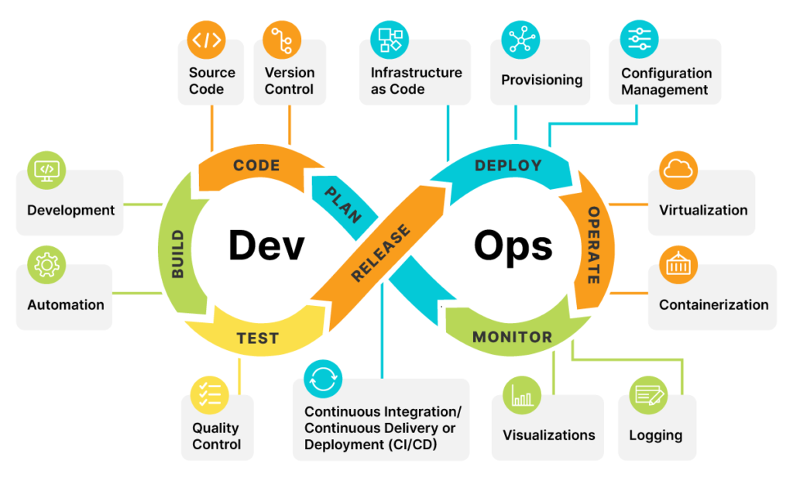

Ops -> DevOps -> Platform Engineering
Evolución de la operativa en infraestructura
Asturias Software Crafters Noviembre 2024 | Ramiro Alvarez¿Quién soy?
- Platform Engineer Architect
- Empathy.co: AI Search
- Resizes: build Internal Developer Platforms
- More: 28 certs, Kubestronaut, FinOps Certified Engineer, Speaker
Agenda
- ¿Ops?
- ¿Dev-Ops?
- ¿Platform Engineering?
- Evolución
- ¿En qué estado estoy?
- ¿Implantación en mi organización?
- Recomendaciones
- Conclusiones
- Q&A
¿Ops?
- Procesos manuales
- Hacer tareas
- Silos
- Equipo Dev y equipo Ops separados
- Reactivos, no proactivos
¿Ops?
¿Ops?
Team Topologies¿Ops?
- Despliegues infinitos
- Demasiada burocracia
- Sin red de seguridad
- Despliegues en producción complejos
- Proyectos que empezaron hace años
¿Dev-Ops?
- Construir sistemas
- Code first
- Dev y Ops en el mismo equipo
- Automatizar todo: DRY
- Startups
¿Dev-Ops?
¿Dev-Ops?

¿Dev-Ops?
Team Topologies¿Dev-Ops?
- Demasiado ownership
- Rol de bombero
- Los equipos siguen teniendo dependencias
¿Platform Engineering?
- Self-service
- Estandarización
- Mayor productividad y autonomía
- Ownership más definido
- Aceleración del SDLC
- Consistencia en seguridad y governance
- Scale-up
¿Platform Engineering?
¿Platform Engineering?
¿Platform Engineering?
Team Topologies¿Platform Engineering?
- Complejidad
- Gran inversión
- Posible efecto caja negra
- Complejidad para medir impacto directo
Evolución
Evolución
- Foco en CI
- Infrastructura como código
- Evitar ClickOps
Evolución
- Observabilidad
- Mejora CI/CD
- Uno más en los distintos equipos
- Ofrecer a los devs mayor autonomía
- Documentación
- Sesiones de formación internas
¿En qué estado estoy?
¿En qué estado estoy?
| Sí | Nivel de madurez | Oportunidades |
|---|---|---|
| >=4 | Bajo | Adoptar Platform Engineering |
| =3 | Medio | En el camino |
| <=2 | Elevado | Plena adopción de Platform Engineering |
¿Implantación en mi organización?
- Eficiencia operativa
- Reducción de costos
- Mejora de la calidad de Software
- Cultura de innovación y aprendizaje
- Beneficios competitivos
- Gestión de riesgos
- Métricas y rendimiento
- Atracción y retención de talento
¿Implantación en mi organización?
- Estandarización y consistencia
- Aumento de la productividad
- Mejora de la seguridad
- Aceleración de la innovación
- Escalabilidad y flexibilidad
- Gobernanza y cumplimiento
- Mejora de la colaboración
Desafíos
- Número de desarrolladores
- Buy vs Build
- Expertise de los trabajadores
Recomendaciones
- Automatizar
- Usar herramientas Cloud Native
- Adoptar nuevas prácticas y features en nuevos proyectos
- Sesiones educativas
- Poner guardaraíles
Conclusiones
- Adopción cultural en la organización
- Balancear tiempo, conocimiento y costes
Q&A